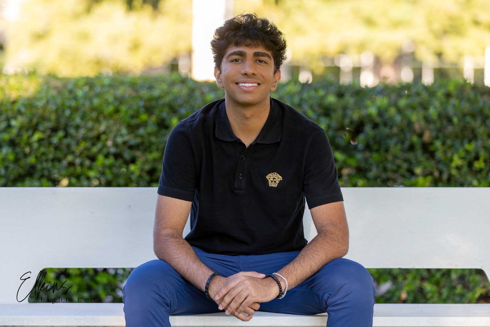
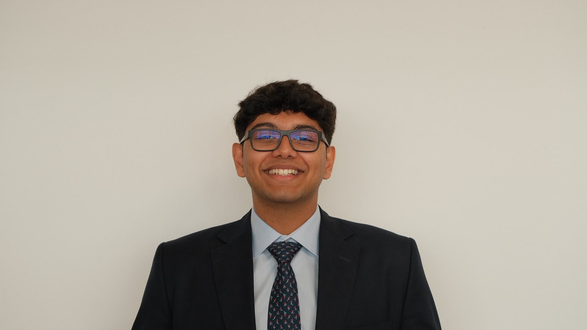
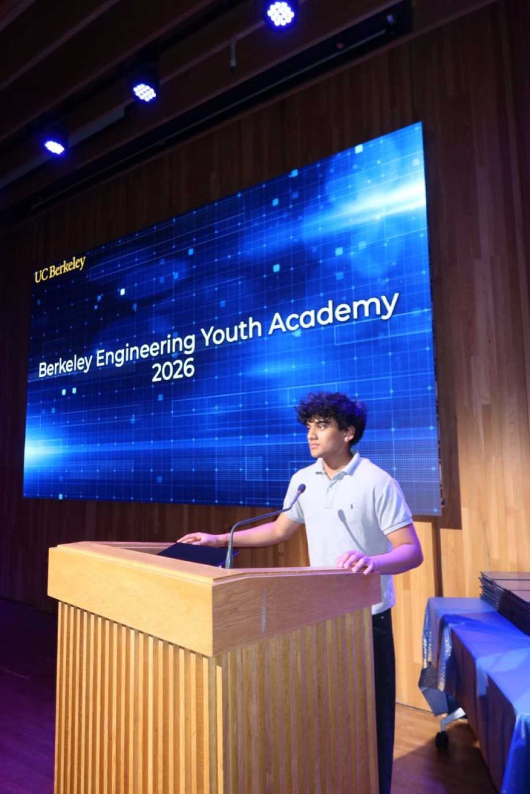
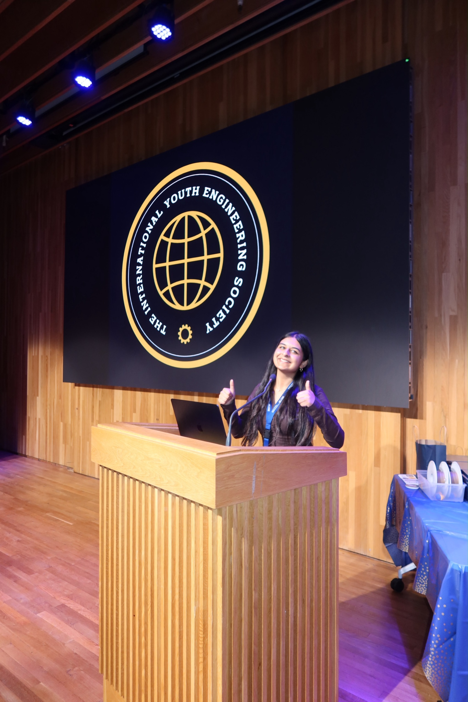
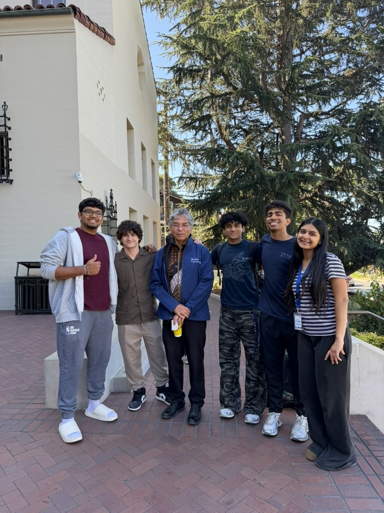

The founding team

Ahan Cofounder, co-president Dallas, Texas, USA
Rajdeep Cofounder, co-president Dubai, UAE
Prahalad Cofounder, chief of strategy Seattle, Washington, USA Fabian Cofounder, chief of research and development Washington DC, USA
Aarushi Agrawal Cofounder, chief operating officer Fremont, California, USAMentorship

T.I.Y.E.S is mentored by Professor George Anwar.
International board
-
Presidents of the international board
Two seats: one junior and one senior. Set the International Board’s direction, lead cross-functional work, represent T.I.Y.E.S globally, and make sure teams turn plans into action.
Open -
Director of international tech
Builds and improves T.I.Y.E.S technology initiatives, including technical tools, digital systems, and projects that support chapters and members.
Open -
Director of international research
Creates research opportunities, supports student project teams, and develops pathways for strong work to become publications or presentations.
Open -
Director of international competitions
Designs and runs engineering competitions, from challenge development and judging to participant experience and international participation.
Open -
Director of international development
Grows T.I.Y.E.S through new chapters, partnerships, and sustainable systems that help teams succeed across cities and countries.
Open -
Director of finance
Maintains financial records, supports budgets, and helps the organization plan and use funds responsibly.
Foma Molchanov -
Director of international education
Builds workshops, learning resources, and education programs that make engineering more accessible to students at every experience level.
Open -
Director of international events
Plans international events, manages schedules and logistics, and creates strong experiences for speakers, participants, and chapter teams.
Open -
Director of international communications
Leads T.I.Y.E.S storytelling, outreach, social media, and communications with students, partners, and the wider engineering community.
Open
City teams
Each chapter starts with a five-person student leadership team: a president, vice president, director of research, director of events, and social media manager. The wider chapter can grow with additional members.
-
Chapter president
Leads the chapter, sets goals, represents the city, and keeps the team moving.
-
Vice president
Supports the president, coordinates day-to-day work, and steps in when needed.
-
Director of research
Leads engineering research and helps members turn ideas into projects, presentations, or publications.
-
Director of events
Plans workshops, competitions, speaker events, and other chapter activities.
-
Social media manager
Documents the chapter's work, manages communications, promotes events, and helps recruit members.